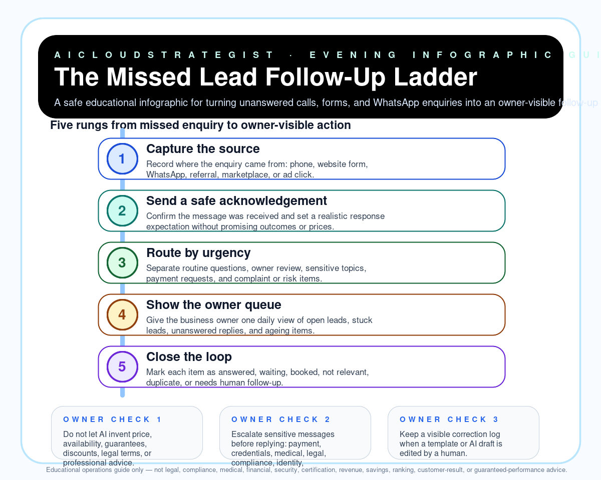

Evening publication · lead follow-up operations
The Missed Lead Follow-Up Ladder
A safe educational infographic for turning unanswered calls, forms, and WhatsApp enquiries into an owner-visible follow-up rhythm without over-automating customer promises.

Five-rung follow-up ladder
- Capture the source: Record where the enquiry came from: phone, website form, WhatsApp, referral, marketplace, or ad click.
- Send a safe acknowledgement: Confirm the message was received and set a realistic response expectation without promising outcomes or prices.
- Route by urgency: Separate routine questions, owner review, sensitive topics, payment requests, and complaint or risk items.
- Show the owner queue: Give the business owner one daily view of open leads, stuck leads, unanswered replies, and ageing items.
- Close the loop: Mark each item as answered, waiting, booked, not relevant, duplicate, or needs human follow-up.
Owner checks
- Do not let AI invent price, availability, guarantees, discounts, legal terms, or professional advice.
- Escalate sensitive messages before replying: payment, credentials, medical, legal, compliance, identity, complaint, or contract topics.
- Keep a visible correction log when a template or AI draft is edited by a human.
Truth boundary
Educational operations guide only — not legal, compliance, medical, financial, security, certification, revenue, savings, ranking, customer-result, or guaranteed-performance advice.